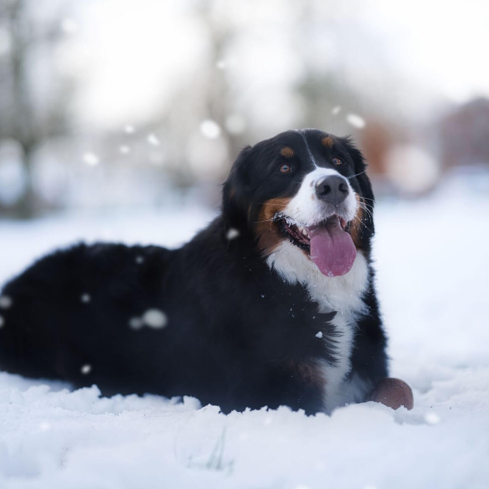
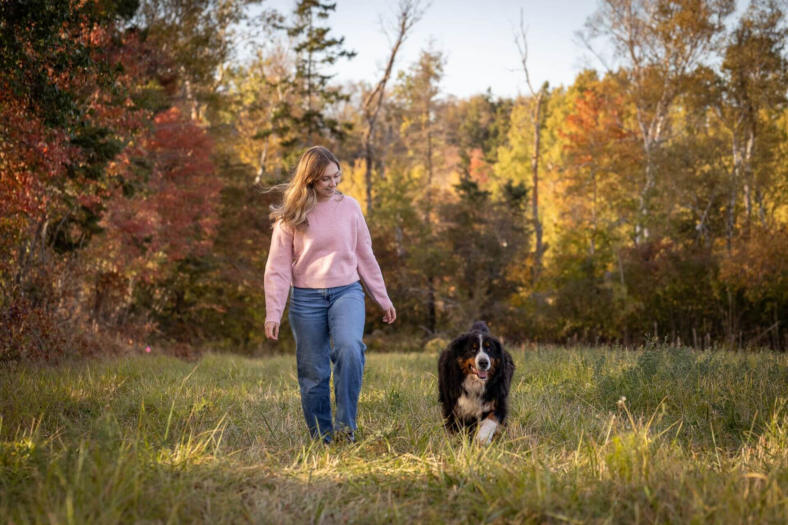
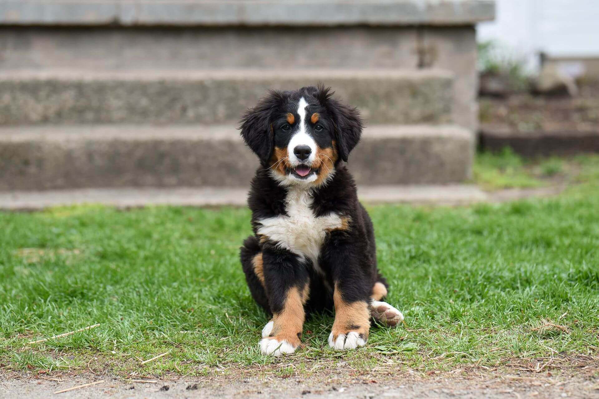
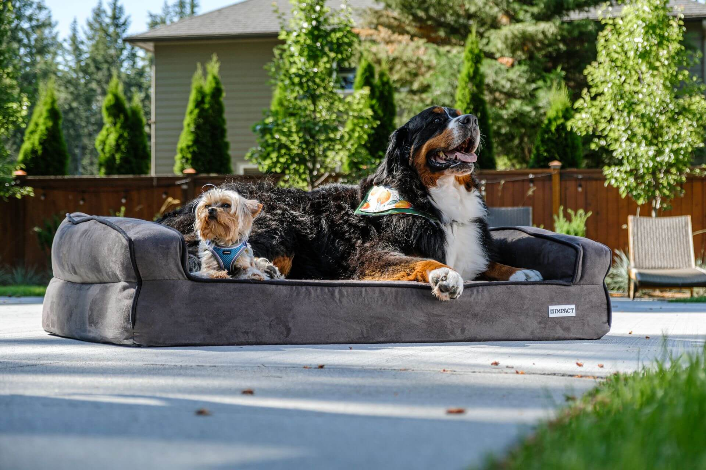

Бернский зенненхунд
Большой, спокойный и невероятно добрый швейцарский пёс с трёхцветной шубой. Преданный семейный компаньон, который особенно нежен с детьми.

- Вес
- 38–50 кг
- Рост в холке
- 64–70 см
- Жизнь
- 8–10 лет
- Энергия
- Умеренная
- Линька
- Сильная
Характер
Бернский зенненхунд это крупная швейцарская порода, выведенная в фермерских хозяйствах Альп как помощник на все руки: он пас скот, охранял двор и возил тележки с молоком. От этого крестьянского прошлого ему достались сила, выносливость и спокойный покладистый нрав. Это добрая, уравновешенная собака, глубоко преданная своей семье и особенно нежная с детьми, за что её часто называют идеальной семейной породой.
С другими животными берн обычно уживается прекрасно. Он миролюбив, не склонен к доминированию и спокойно принимает в доме и собак, и кошек, особенно если растёт вместе с ними. К посторонним относится доброжелательно, но крупный размер и внимательность делают его хорошим ненавязчивым сторожем.
Стоит знать и о других особенностях породы. Берн умён и охотно учится, потому что искренне хочет угодить хозяину, и это делает дрессировку приятной даже для новичка. При этом он тяжело переносит одиночество и сильно привязывается к людям.
Есть у берна и трогательная черта. Несмотря на внушительный вид, в душе он надолго остаётся щенком: любит играть в любом возрасте, ходит за хозяином по пятам и буквально расплывается в добродушной «улыбке», когда доволен.
Характеристики
Размер
Крупная и мощная собака. Кобели весят примерно от 38 до 50 килограммов при росте 64–70 сантиметров в холке, суки заметно легче и ниже.
Шерсть
Длинная, густая, слегка волнистая, трёхцветная. Требует регулярного вычёсывания, а в период сезонной линьки особенно тщательного.
Энергия
Умеренная. Берну нужны спокойные ежедневные прогулки, но без чрезмерных нагрузок, особенно в жару и в период роста щенка.
Обучаемость
Высокая. Порода послушна, сообразительна и стремится радовать хозяина, поэтому подходит даже неопытным владельцам.
Отношение к детям
Прекрасное. Берн терпелив, ласков и бережен с детьми, его часто называют врождённой нянькой.
Здоровье
Это самая важная и грустная тема породы. Из-за крупного размера и наследственной предрасположенности бернские зенненхунды живут меньше многих других собак, в среднем 8–10 лет. При выборе щенка к здоровью родительской линии нужно отнестись особенно серьёзно.
Онкология
Берны входят в число пород с самым высоким риском рака, и именно он чаще всего сокращает им жизнь. Огромное значение имеет ранняя диагностика.
Дисплазия суставов
Тазобедренные и локтевые суставы у крупной породы под особой нагрузкой. Риск снижают контроль веса и проверка родителей.
Болезнь фон Виллебранда
Наследственное нарушение свёртываемости крови. Выявляется анализами, ответственные заводчики проверяют производителей.
Окрасы
Бернский зенненхунд почти всегда трёхцветный: глубокий чёрный фон, тёплые рыжие подпалины на скулах, лапах и груди и белые отметины на морде, груди и кончике хвоста. Однотонным он не бывает, и это узнаваемая визитная карточка породы.

Белый «крест» на груди и светлая отметина между глазами считаются особенно желанными признаками породного берна.
Кому подходит
Бернский зенненхунд станет прекрасным выбором для семьи, которая хочет доброго, спокойного и преданного компаньона и готова проводить с собакой много времени дома. Ему нужны простор, прохлада и постоянное присутствие людей, рядом с которыми он чувствует себя счастливым.
Сложно с берном придётся в жарком климате, при частом отсутствии хозяев и без готовности к серьёзному уходу за шерстью. Эта порода создана быть рядом, и счастливее всего она там, где её окружают вниманием и заботой.
Берн в жизни


